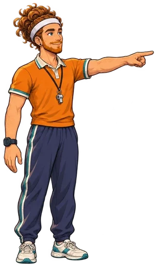

El vestuario · antes de salir a la pista
Preparaos para el mate
Esperando a tus compañeros…

Código de sala
Reglas de la sala
Siempre: impacto sin bote, cárcel tras el campo rival y vuelta del preso que alcanza a un rival. Cada personaje tiene su propia definitiva: empieza a media carga y se recarga jugando.
Busca la pelota y ayuda a tu equipo.
ENTRENAMIENTO
 Definitiva
Definitiva
FIN DEL PARTIDO
Tabla de puntos
Diana 100 · Atrapada 75 · Rescate 50 · Asistencia 40 · Esquiva 25 · Ronda ganada 50 para todo el equipo